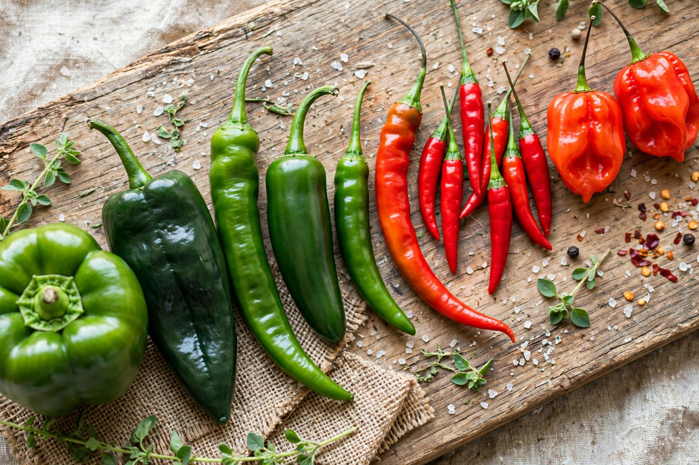

From Wikipedia, the free encyclopedia
| Scoville scale | |
|---|---|
 | |
| Unit of | Pungency (heat) |
| Symbol | SHU |
| Named after | Wilbur Scoville |
The Scoville scale is a measurement of the pungency (spiciness or "heat") of chili peppers, recorded in Scoville heat units (SHU) and based on the concentration of capsaicinoids, principally capsaicin. The scale is named after its creator, American pharmacist Wilbur Scoville, who devised the method in 1912 while working for the Parke-Davis pharmaceutical company.
In Scoville's original method, an alcoholic extract of dried pepper was diluted in sugar water and given to a panel of tasters; the dilution was increased until the heat could just no longer be detected. The degree of dilution gives the measure in Scoville units: a pepper requiring dilution of 1:5,000 rates 5,000 SHU. Pure capsaicin rates 16,000,000 SHU, so a pepper's rating reflects its capsaicin content as a fraction of that maximum.
The test depends on human tasters and is imprecise. Since the 1980s, pungency has more commonly been measured by high-performance liquid chromatography (HPLC), which quantifies capsaicinoids directly; results are converted into Scoville units using the convention that 1 part per million of capsaicinoids corresponds to about 16 SHU.